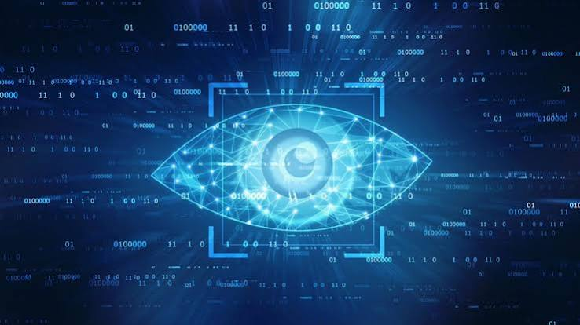

¿Qué es la visión por computadora?
La visión por computadora es un área de la Inteligencia Artificial que permite a los sistemas informáticos analizar imágenes y videos para identificar objetos, reconocer formas e interpretar información visual.
¿Cómo funciona?
El sistema recibe una imagen o un video, procesa sus características y utiliza algoritmos entrenados para identificar patrones. Finalmente, genera un resultado, como reconocer un objeto o detectar una anomalía.

Aplicaciones reales
- Reconocimiento facial para verificar identidades.
- Análisis de imágenes médicas para apoyar diagnósticos.
- Detección de objetos en vehículos y cámaras de seguridad.
Tabla de aplicaciones
| Aplicación | Descripción |
|---|---|
| Reconocimiento facial | Identifica o compara rostros en imágenes. |
| Medicina | Ayuda a detectar características en radiografías y otras imágenes clínicas. |
| Industria | Detecta defectos en productos durante la inspección de calidad. |
| Vehículos autónomos | Reconoce señales, peatones y obstáculos. |